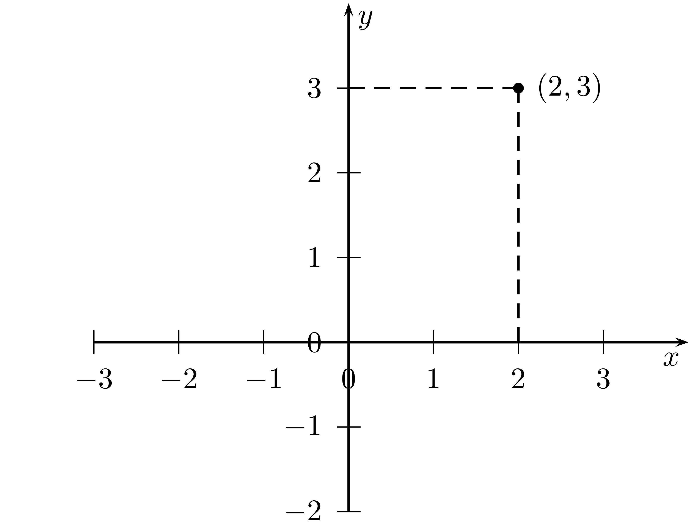
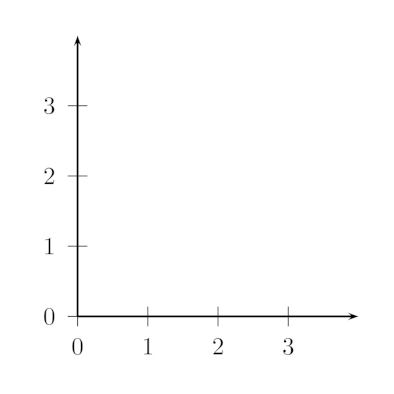

points <- data.frame(x = c(1,2,3,4), y= c(1,2,3,4))6 Modelling relationships part 1: Some basic mathematical ideas
6.1 Statistical models
In our course so far we have encountered various methods which allow us to visualize and summarize data consisting of a single set of numbers. We have alos learned how to look at associations between pairs of variables. These simple techniques have already taken us quite far and allowed us to look at various interesting real world questions.
In general modern data are much more complex. In such more complex situations, involving whole lists of related variables, we need more powerful tools. In this chapter we are going to take a first step in introducing the idea of a statistical model.
A statistical model is a mathematical representation of the relationship between variables which we can use for the prediction of the value of one variable using the value of another variable or the values of a list of other variables. It also allows us a more precise description of the relationship between variables.
Statistical models inevitably involve some mathematical ideas, which you need to understand to confidently work with these models and use them. In this chapter we will introduce you to these ideas step by step, going into actual statistical models and its most important form, regression analysis in the next chapter.
6.2 Plotting points and lines
In this section we review some ideas about plotting points and lines which we will need for understanding statistical models. For some of you this might be a refresher of concepts you have already encountered in school, for others this material might be new.
6.2.1 Reading points off a graph
Figure 6.1 shows two coordinate systems, coordinatesystem 1 and coordinatesystem 2. The graphs of the coordinate systems have a horizontal axis, the \(x\)-axis and a vertical axis, the \(y\)-axis. Each point in the plane can be described by its coordinates, given by an \(x\) value and a \(y\) value.
For example, the point shown in coordinatesystem 1 is the point \((x,y) = (2,3)\). This is the point you get in the plane, if you move from the origin \((0,0)\) 2 units to the right on the \(x\)-axis and then 3 units up on the \(y\)-axis.
In the second coordinate system, cordinatesystem b, you see the plot of a point \((x,y) = (-1.5, -0.8)\) with the coordinates \((-1.5,-0.8)\). The idea to represent points in a plane by pairs of numbers (their coordinates) is very powerful because it combines two apparently different field, algebra - the manipulation of numbers by adding, subtracting etc. - and geometry, lines, points and other geometric objects. This idea goes back to the french philosopher and mathematician Rene Descartes (1556 - 1630).1 This is why the \(x\) and \(y\) coordinates are often referred as “cartesian coordinates”. 3 units u
1 Rene Descartes was born in 1556 and died in 1630. He was a french philosopher and mathematician and scientist. His connection of the two previously separated fields of geometry and algebra into the field of analytic geometry is one of his lasting contribution to mathematics. Here you see a portait painted by the Dutch painter Frans Hals. 


Now you try

Figure 6.2 shows 5 points plotted in a coordinate system.
- Write down the \(x\) and \(y\) coordinate for each point.
- As you move from point A to point B in Figure 6.2, explain by how mauch your \(x\)-coordinate and your \(y\)-coordinate goes up.
- One point in Figure 6.2 has a \(y\)-coordinate 1 bigger than the \(y\)-coordinate of point E. Which point is this?
6.2.2 Plotting Points
Assume we want to plot a point \((x,y) = (2,3)\).
 Here is a step by step procedure. We start with a coordinate system as depicted in ?fig-plota

The \(x\) coordinate is at 2. We could imagine a dotted line starting at \(x=s\) and extending vertically through the coordinate system as shown in Figure 6.3.

Finally the \(y\) coordinate has value 3. We could imagine a dashed line starting at the \(y\) coordinate parallel to the \(x\) axes as shown in Figure 6.4
The point \((2,3)\) is where both of the dashed lines intersect.
With the help of the computer, you can of course plot points automatically. Let me show you how.
Say we want to plot the points \((1,1)\), \((2,2)\), \((3,3)\) and \((4,4)\) with R. The way we plot these data would be that we represent the coordinates in R as a dataframe (see 3.2.4) like this.
The first column in the dataframe which we named points contains all the values of the x-coordinates, the second column contains all the values of the y-coordinates.
Now if we give the object pointsas an argument to the plot function of R we get a plot of the points in the appropriate coordinate system. Let’s try this:
plot(points)